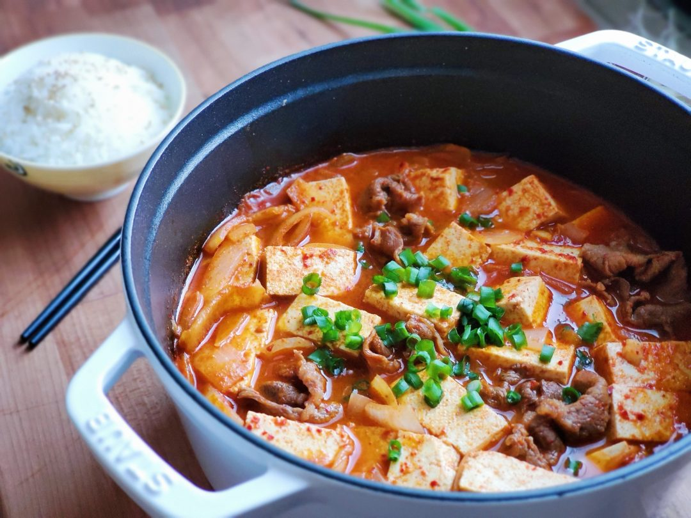

Korean Tofu Stew A.K.A Soondubu

Description:
The most well-balanced dish: with a soft, melt-in-your-mouth tofu, bubbly and spicy kimchi stew, with tender beef.
Ingredients:
- 1 pack of Korean Soft Tofu.
- 1 pack of Jonggae Kimchi.
- 1 Onion sliced up.
- 4 cloves of minced Garlic.
- 1 Egg
- 2 tbsp of Gochugaru/Korean Red Chili Pepper Flakes.
- 4 tsp of Gochujang.
- 2 tsp of Soy Sauce.
- 2 tsp of Sesame Oil
- Enoki Mushrooms
- Protein of your choice!
Steps:
- Heat oil in a pot and saute the Onions and Garlic until fragrant.
- Add in Kimchi with its juices and saute for another 2-3 minutes.
- If using spam or chicken, throw it in the pot now and saute until meat mostly cooked through.
- Add in the chicken broth, gochugaru, gochujang, mirin, soy sauce, sesame oil, and sugar.
- Stir until well combined and entire pot to a boil. Add in the tofu and let the stew boil for 5 minutes.
- If using thinly sliced meat or eggs, add it in now and cook until meat is done or egg is cooked to desired doneness.
- Garnish with some green onions and enjoy over rice!